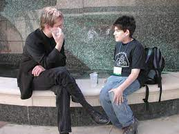

Aaron Swartz
The Internet's Own Boy

Information is Power. But like all power, there are those who want to keep it for themselves
Information is Power. But like all power, there are those who want to keep it for themselves
Aaron Swartz was born in Highland Park, 40 kilometers north of Chicago, into a Jewish family. He was the eldest child of Susan and Robert Swartz and brother to Noah and Ben Swartz. He was an atheist. His father founded the software firm Mark Williams Company. At an early age, Swartz immersed himself in the study of computers, programming, the Internet, and Internet culture
In 1999, at age twelve, he created the website The Info Network, a user-generated encyclopedia. The site won the ArsDigita Prize, given to young people who create "useful, educational, and collaborative" noncommercial websites and led to early recognition of Swartz's nascent talent in coding. At age 14, he became a member of the working group that authored the RSS 1.0 web syndication specification. A year later, he became involved in the Creative Commons organization. In 2005, he enrolled at Stanford University but left the school after his first year.
Swartz helped liberate tons of information from government databases and create open access libraries and projects.
Swartz is known for the “Guerilla Open Access Manifesto”, which was a call to rally and fight back against powerful companies gatekeeping information and knowledge. The Guerrilla Open Access Manifesto was a call for scientists, researchers and intellectuals to fight the anarchic system which was locking up all the knowledge and culture in the world.
“We need to take information, wherever it is stored, make our copies and share them with the world. We need to take stuff that’s out of copyright and add it to the archive. We need to buy secret databases and put them on the Web. We need to download scientific journals and upload them to file sharing networks. We need to fight for Guerrilla Open Access.”
According to state and federal authorities, Swartz used JSTOR, a digital repository, to download a large number of academic journal articles through MIT's computer network over the course of a few weeks in late 2010 and early 2011. Visitors to MIT's "open campus" were authorized to access JSTOR through its network; Swartz, as a research fellow at Harvard University, also had a JSTOR account.
On September 25, 2010, the IP address 18.55.6.215, part of the MIT network, began sending hundreds of PDF download requests per minute to the JSTOR website, enough to slow the site's performance.
According to authorities, Swartz downloaded the documents through a laptop connected to a networking switch in a controlled-access wiring closet at MIT. The closet's door was kept unlocked, according to press reports. When it was discovered, a video camera was placed in the room to record Swartz; his computer was left untouched. The recording was stopped once Swartz was identified, but rather than pursue a civil lawsuit against him, JSTOR settled with him in June 2011; under the terms of the settlement, he surrendered the downloaded data.
On the night of January 6, 2011, Swartz was arrested near the Harvard campus by MIT Police and a Secret Service agent, and arraigned in Cambridge District Court on two state charges of breaking and entering with intent to commit a felony.
Swartz died by suicide on January 11, 2013
On the evening of January 11, 2013, Swartz's girlfriend, Taren Stinebrickner-Kauffman, found him dead in his Brooklyn apartment. A spokeswoman for New York's Medical Examiner reported that he had hanged himself. No suicide note was found.